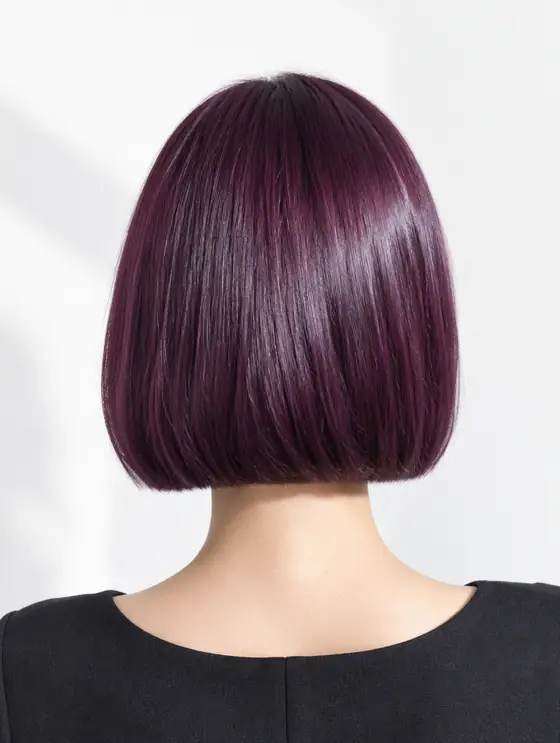
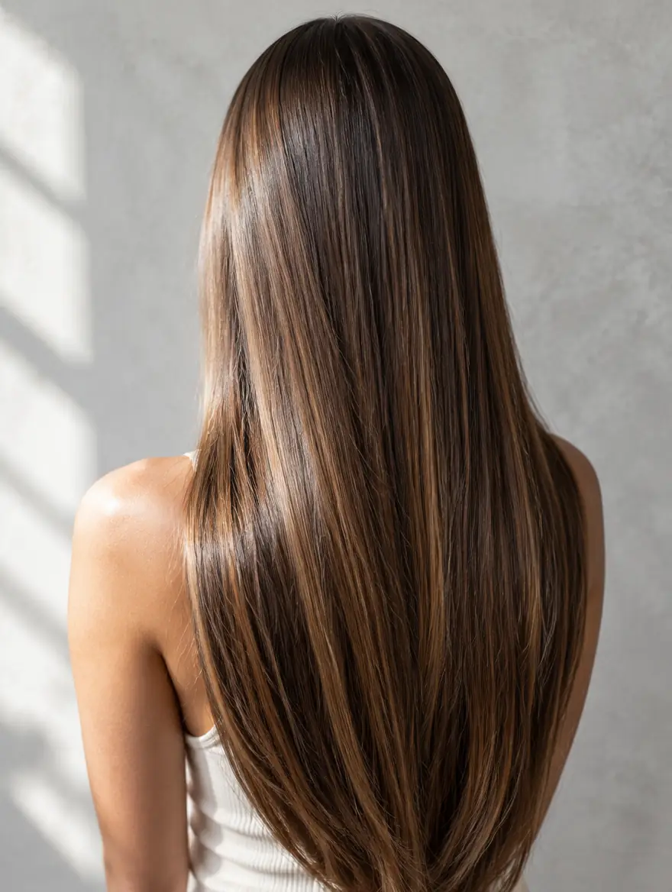

La radice, al momento giusto
Dopo il colore ti scriviamo su WhatsApp tra 5 e 6 settimane, quando è ora del ritocco. Lo attivi quando prenoti.
Pescara · Piazza Garibaldi 13 · dal 2017
01 · Il taglio
Taglio donna, uomo e sposa. La forma prima di tutto, poi la piega che dura.
Dalla lunghezza al caschetto in un colpo di forbice. Il resto è colore.
02 · Il colore
Castano naturale
Wella Professionals Official Salon. Dal naturale al Colorful, sempre su misura.
Scegli il servizio e la persona. Ti confermiamo l'orario.
Il fondatore

La bellezza ha un'identità: la tua!
Da oltre trent'anni nel mondo dell'hairstyling, vivo il mio lavoro con la stessa passione degli inizi.
Nel 2017 nasce La Bottega dei Parrucchieri, un progetto evolutivo, fatto di tecnica, ricerca e continuo aggiornamento, dove ogni collaboratore contribuisce con uno specifico talento, passione e professionalità.
Nel tempo, il mio lavoro mi ha portato ad aprire un salone oltre mare, alle Canarie, e a far parte del team della Milano Fashion Week, sviluppando collaborazioni con Wella: una realtà di riferimento nel mondo dell'hairstyling.
Oggi La Bottega è anche un progetto che va oltre il salone: abbiamo sviluppato una nostra linea Haircare, Made in Italy e fitobiologica, pensata ad hoc per prolungare a casa la qualità e la cura del lavoro realizzato in salone.
Proprio quel salone che rappresenta una realtà costruita dall'esperienza di ieri, dalla ricerca di oggi e dalla voglia di creare il futuro del capello di domani.
— Fabio D'Attanasio
Backstage
Dietro le quinte delle sfilate con il team Wella. E qualche incontro speciale.


Il servizio firma · il più richiesto

 PrimaDopo
PrimaDopo
Schiariture baciate dal sole, sfumate a mano. Scorri e arriva la luce. Immagini generate per la demo.
Servizi
Il prezzo dipende dalla lunghezza e dal servizio: te lo diciamo quando confermiamo l'appuntamento, prima che tu venga. Tocca un servizio per prenotarlo.
Colore e forma





Immagini generate per la demo: qui andranno i lavori veri dal profilo Instagram.
La squadra
Le clienti ci chiamano per nome. Tocca una persona e prenoti direttamente con lei.
Receptionist

Il salone


Foto reali del salone, ritoccate solo nella luce e nell'ordine.
Dicono di noi
Colore perfetto. La piega è durata una settimana.
Ormai è una garanzia. Qualunque sia il trattamento, la professionalità è assoluta.
Mi trovo davvero benissimo. Puntuali, bravissimi e capaci sempre di darmi il consiglio giusto.
Mi sono trovata, come sempre, perfettamente a mio agio.
Sposa
Percorso proposto: da confermare con il salone. Immagine generata.
Per te
Dopo il colore ti scriviamo su WhatsApp tra 5 e 6 settimane, quando è ora del ritocco. Lo attivi quando prenoti.
Porta un'amica che non è mai stata da noi: un regalo per entrambe. Il regalo lo sceglie il salone.
Proposte per il salone: consulenza online, promemoria e "porta un'amica" si attivano solo se il salone lo decide.
Lavoriamo con
Vieni a trovarci
Orari